Opening
The opening is the first section of the chess game, and consists of both players developing their pieces and attempting to gain control of the 4 center squares. This section generaly follows already known oppenings, which players memorize, and the transition from this phase into the middle game is generaly marked by both players castling and getting their kings to safety. This section will teach you some basic chess opening tactics, foccusing on the king's pawn oppening.
Table of Contents
- King's Pawn Oppening- Wayward Queen's Oppening
- Wayward Queen's Oppening Defense
The King's Pawn Opening
The king's pawn opening is opening is one of the most widley played oppenings in chess. It starts with the move E2 E4 from white, moving the pawn in front of their king to the center of the board. This move allows them to take some control of the center, important tactical squares, and also opens up the queen and biushop beside their king, letting them develop and attack.
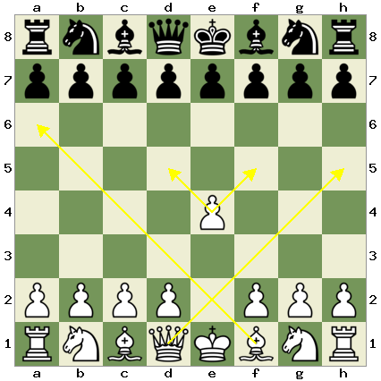Most of the time black will respond with the move e7 e5, moving their kings pawn directly into the center as well, copying whites move. This accomplishes the same thing as whites move. White should now try do develop their minor pieces, such as their knights and bishops. Most of the playing the move G1 F3, developing the knight. This both developes a piece, secures more of the center, and attacks blacks pawn.
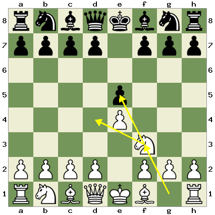Black has a few usual responses to this, ussualy they will push one of their own nights forward. Sometimes they may play g8 f6, mirroring your move once again. This is known as Petrov's defense. If this is played, black is allowing you to take their pawn, which would let them take your pawn in return. An example of this is below, you can move through it by using the arrows at the bottom.
A more common second move from black is to move the other knight out. This protects their center pawn, as if you took it now they could take your knight. This is bad as a knight is a more powerful piece than a pawn.
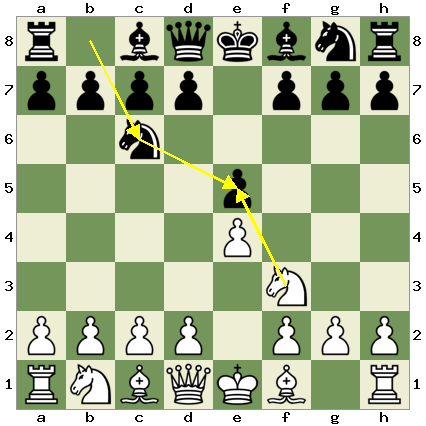From here the opening will generally continue with both players developing their minor pieces more, bringing out their other knight or their free bishop.
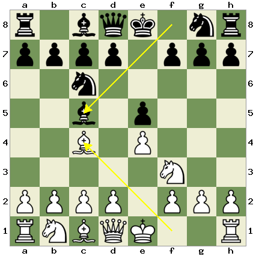 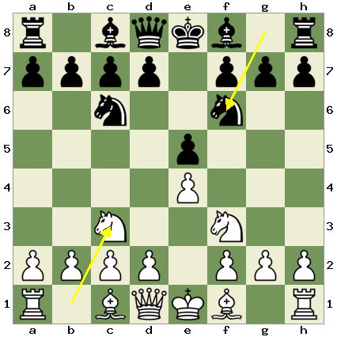Now that their pieces are developed, both players should aim to castle, moving their kings to a safer position and transitioning into the middle game section of a chess game. If both players decided to develop their bishops then this is easy, as white can already castle, and black just needs to move their second night out of the way.
However, if they developed the second knights instead, the players both need to move their bishop out of the way before they castle. This can be done by performing a fianchetto with the bishop. This involves moving the pawn between the bishop and the rook forwards one, and moving the bishop into the empty space that is created. This give the king extra safety.
The Wayward Queen Attack
The Wayward queen attack starts in a similar way to the king's pawn opening, but then transitions into what is known as a gambit. A gambit is a move which may not be statisticaly the best move, but has the pottential to trick your opponent. This wayward queen attack can lead to one of the fastest checkmates, or win, in the game, especially at the begginer level. It starts with the same E2 E4 e7 e5 as the previous king's pawn oppening, but instead of developing the knight after this as usual, you bring out the queen, playing D1 H5.
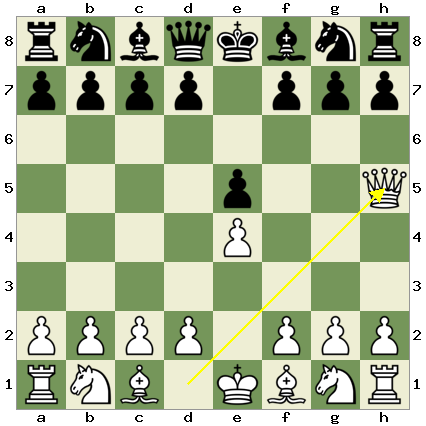This move is dangerous, as it exposes the queen, but it allows for various attacks and tricks, meaning your oppoent will have to play very precisley. For example, id the continue as they normaly would in the kings pawn opening, bringing their knight out, you can develop your bishop with F1 C4. This creates a threat on the opponents pawn on f7, as you now have two pieces attacking it, and only the opponent's king deffends it.
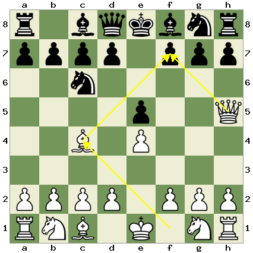Now if the opponent developes another minor piece, such as their bishop or other knight, you can play H5 F7 checkmate. This is checkmate because your attacking queen leaves nowhere for the opponent to move, and the opponent can't take the queen because your bushop defends it. This is one of the fastest checkmates in the game, and is known as the Scholar's Mate.
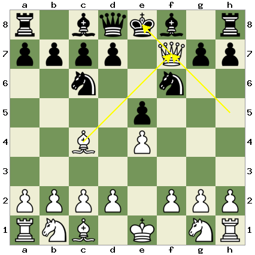Now one common move you'll see black try to defend against this is the move g7 g6, moving their pawn forwards to both attack your queen, and prevent it from taking the weak pawn next to the king. if this is played, white can instead play H5 E5, taking the opponent's central pawn.
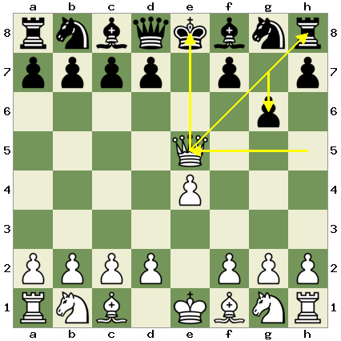This creates two separate attacks, as it both puts the opponent's king in check, and attacks the newly exposed rook. The opponent can only protect one of these, so they will end up protecting the king, allowing you to take the rook for free.
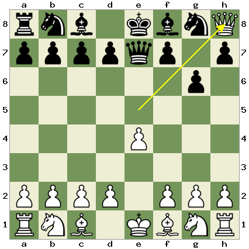Defense Against the Wayward Queen Attack
When an opponent plays the wayward queen attack as white, you actually gain the advantage with the black pieces, but only if you know how to repel their attack and cappitalize off of the situation. As we saw in the previous section pushing your pawn forward is not the right way to go, in fact this blunders your rook. The important thing to remember is that your only actualy being threatened once your opponent brings their bishop out as well, so you still have some time to defend. You should start by defending your vulnerable center pawn, either by pushing your pawn on the d file forward, or moving your knight.
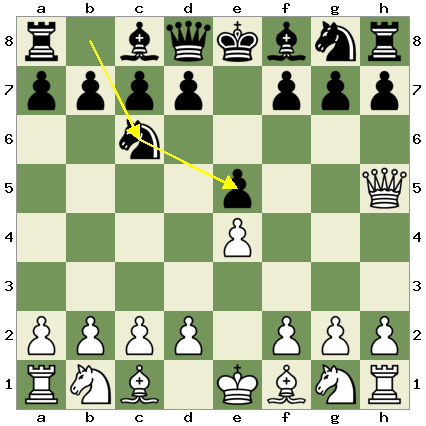This effectivley defends this pawn, and now when your opponent moves their bishop out to attempt to checkmate, you can move your pawn forward to block the attack and attack their queen. You can do this now as the center pawn is defended and you are no longer in danger of a fork. After this you can continue developing your pieces as usual.
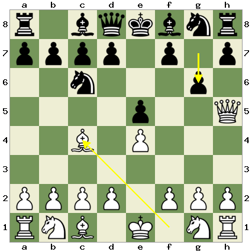Coded By: Finn Cullen 2023